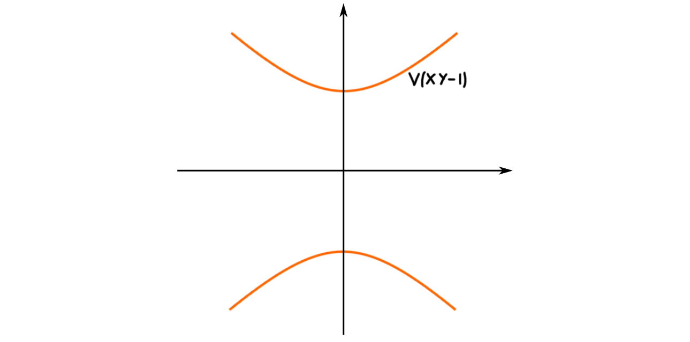

The first post on this blog is titled “geometric intuition”, and discusses the geometry behind Noether’s normalization lemma. When I wrote it I didn’t yet understand all the pieces, as I was not very comfortable working with algebraic geometry. One year later, I’m still not comfortable, but a bit more than last year. So, I thought I would update last years post with my new knowledge, as well as generalize the intuition to schemes - which we introduced in the last post.
Noether normalization tells us information about algebras, in particular finitely generated algebras over a field $k$. Such an algebra is not necessarily a $k$-vector space, but, Noether normalization tells us that it is a finitely generated module over a polynomial ring over $k$. As we saw in the last post, algebraic geometry is very much focused on finitely generated $k$-algebras, and polynomial rings, so the fact that geometric information arises from the result is hopefully not very surprising. We restrict ourselves to infinite fields $k$, and perhaps also algebraically closed ones.
Lemma (Noether normalization for algebras): Let $A$ be a finitely generated commutative $k$-algebra. Then there exists a non-negative integer $d$ and algebraically independent elements $y_1, \ldots, y_d$, such that $A$ is a finitely generated module over $k[y_1, \ldots, y_d]$.
There are several ways to package this information. Being a finitely generated $k$-algebra is often called being a finite type $k$-algebra, and being a finitely generated module over a ring $B$ is often called being finite over $B$, or being an integral extension of $B$. We will encounter some of these again in various forms below.
For algebraic varieties
Last time we covered some very introductory basics regarding algebraic varieties, and in particular we looked a bit at the correspondence between ideals in $k[X_1, \ldots, X_n]$ and affine algebraic sets in $k^n$. We did not actually state any results about this correspondence, so before we tackle Noether normalization we need to do so.
First off, Noether normalization holds for any finitely generated $k$-algebra, so it would be helpful for us to understand how all of these behave. It turns out that every finitely generated $k$-algebra is of the form $k[X_1,\ldots,X_n]/I$, where $I$ is some ideal in $k[X_1, \ldots, X_n]$. This is good, because these are exactly1 the algebras we can use to study algebraic varieties. This also means that any affine algebraic variety naturally lives in some affine $n$-space, as the projection $k[X_1, \ldots, X_n]\rightarrow k[X_1, \ldots, X_n]/I$ induces an inclusion $V(I)\rightarrow k^n$.
We know from the weak nullstellensatz that for an affine algebraic variety $V$, the points in $V$ have a one to one correspondence with the maximal ideals in $\Gamma(V)$. We also have a one to one correspondence between prime ideals in $\Gamma(V)$ and irreducible affine subvarieties of $V$. Here the notion of irreducible means that a subvariety $W$ can be written as a union of two closed sets. The normal nullstellensatz generalizes this picture, and states that the correspondences are special cases of another correspondence, namely the on to one correspondence between affine algebraic subvarieties of $V$, and radical ideals in $\Gamma(V)$. This correspondence is given by the two asignments $V(-)$ and $I(-)$ that we defined last time, i.e. the zero set of an ideal, and the ideal of a variety.
We can use the above to prove that we have an equivalence of categories between the category of affine algebraic varieties over a field $k$, and the category of finitely generated reduced $k$-algebras. Reduced means that the $k$-algebra has no nilpotent elements. In the case of finitely generated algebras, it is enough that the ideal $I\subseteq k[X_1, \ldots, X_n]$ that defines the finitely generated $k$-algebra, is a radical ideal.
To properly understand Noether normalization for affine algebraic varieties, we must understand the concept of dimension. The (topological) dimension of a variety is defined by certain chains of certain subsets.
Definition (Topological dimension): Let $V$ be an affine algebraic variety. The dimension of $V$ is defined to be the length of the largest proper chain of irreducible closed subsets of $V$, i.e.
$$\dim V = \sup_{d}U_1\subsetneq U_2\subsetneq \cdots \subsetneq U_d$$
where $U_i$ is a closed irreducible subset of $V$.
We immedeatly see that this definition is only suited for topologies equal to, or similar to, the Zariski topology. If we for example look at a more normal topological space, for example a Hausdorff space, then the topological dimension is $1$, as the only closed irreducible subsets are points. But, this definition works incredibly well in algebraic geometry, due to the correspondence we mentioned above - between the prime ideals in $\Gamma(V)$ and irreducible closed subsets of $V$. This allows us to perfectly match the topological dimension of a variety to the Krull dimension of its coordinate ring.
Definition (Krull dimension): Let $A$ be a ring. The Krull dimension of $A$, denoted $\dim_K A$ is defined to be the longest proper chain of prime ideals in $A$, i.e.
$$\dim_K A = \sup_{d}p_1\subsetneq p_2\subsetneq \cdots \subsetneq p_d$$
where $p_i\subseteq A$ is a prime ideal.
The above remark means that we have
$$\dim V = \dim_K \Gamma(V)$$
for all affine algebraic varieties $V$.
Ok, the final thing we need before looking at the result of interest, is linear subspaces of $k^n$. The first thing to figure out is what the coordinate ring of a linear subspace is. If we take one such linear subspace $L\subseteq k^n$, then its coordinate ring is $k[X_1,\ldots,X_n]/I(L)$, i.e. the polynomial ring in $n$ variables, modulo the ideal of $L$. This ideal consists of all the polynomials in $k[X_1,\ldots, X_n]$ that vanish on all points in $L$. Let us first consider the linear subspace $k^d$ as the $x_1\cdots x_d$-plane. As its ideal are the polynomials that vanish on its points, we must have $I(k^d)= (X_{d+1}, \ldots, X_n)$. To be sure we understand this, we look at $k=\mathbb{R}$, $d=1$ and $n=2$. We can look at $k$ being the $x$-axis as a subspace $k^2$. This space is given by $V(Y)$:
The polynomials that are zero on the $x$-axis can not feature any solo copy of $X$. What we mean is that such a polynomial can’t be for example $f(X,Y)=X^3+Y$ as for some point $(a,0)$ on the $x$-axis, $f(a,0) = a^3\neq 0$. We also can’t have any constant terms, as for example $g(X,Y)=XY^2+3$ is not zero on points $(a,0)$ on the $x$-axis. Hence, we must have that all components of a polynomial that vanish on the $x$-axis, must contain a copy of $Y$. This precisely means that $I(k)=(Y)$.
Generalizing the above, we get that the linear subspace $k^d\subseteq k^n$ is defined by $V(X_{d+1},\ldots, X_n)$, which gives us that $I(k^d)=I(V(X_{d+1}, \ldots, X_n)) = (X_{d+1}, \ldots, X_n)$, where the last equality comes from Hilbert’s nullstellensatz, together with the fact that $(X_{d+1}, \ldots, X_n)$ is a radical ideal.
Any $d$-dimensional linear subspace $L$ of $k^n$ must be isomorphic to $k^d$, hence their coordinate rings will also be isomorphic. Thus we get
$$\Gamma(L)\cong \Gamma(k^d) \cong \frac{k[X_1, \ldots, X_n]}{I(k^d)} \cong \frac{k[X_1, \ldots, X_n]}{(X_{d+1}, \ldots, X_n)}\cong k[X_1, \ldots, X_d]$$
We are now ready to tackle Noether normalization for affine algebraic varieties.
Lemma (Noether normalization for varieties): Every $d$-dimensional affine algebraic variety $V\subseteq k^n$ has a surjective morphism to a $d$-dimensional linear subspace $L$ of $k^n$.
“Proof”: The result naturally follows from Noether normalization for algebras. Given a $d$-dimensional algebraic variety $V$ we can look at its coordinate ring $\Gamma(V)$. This is a finitely generated $k$-algebra, and is thus subject to Noether normalization for algebras. This means that there exists elements $y_1, \ldots, y_d$ such that $\Gamma(V)$ is a finitely generated $k[y_1, \ldots, y_d]$-module. This is the same as saying that the ring homomorphism $k[y_1, \ldots, y_d] \hookrightarrow \Gamma(V)$ is an injective integral morphism. The ring $k[y_1, \ldots, y_d]$ must be the coordinate ring of a $d$-dimensional linear subspace of $k^n$, which we can call $L$. Hence we have an integral extension $\phi:\Gamma(L)\hookrightarrow \Gamma(V)$ of reduced finitely generated $k$-algebras. Since we have an equivalence of categories between these algebras and affine algebraic varieties, there must exist a map $\phi^\ast\colon V\rightarrow L$. As the map $\phi$ is injective, the map $\phi^\ast$ is dominant, i.e. its image is dense in $L$. Because $\phi$ is integral, the image of $\phi^\ast$ is closed, which then finally means that $\phi^\ast$ is surjective as the closure of its image is both the whole space, and the image itself, i.e. $\text{Im }\phi^\ast = \overline{\text{Im }\phi^\ast} = L$.
The fact that the dimensions coincide, i.e. that the dimension of the linear subspace necessarily is the same as the dimension of the algebraic variety, is due to the following result.
Theorem: Let $A$ be a ring with Krull dimension $d$. Then any integral extension of $A$ also has Krull dimension $d$.
So, if we take a finitely generated $k$-algebra - now the coordinate ring of an affine algebraic set - $\Gamma(V)$, then Noether normalization tells us that there are algebraically independent elements $y_1, \ldots, y_d$ such that $\Gamma(V)$ is a finitely generated module over $k[y_1, \ldots, y_d]$, or equivalently, that $\Gamma(V)$ is integral over the subring $k[y_1, \ldots, y_d]$. As $k[y_1, \ldots, y_d]$ is a polynomial ring over $d$ independent variables, it has Krull dimension $d$. And by the result above, $\Gamma(V)$ also has Krull dimension $d$. We also know that the dimension of $V$ is equal to the Krull dimension of $\Gamma(V)$, hence this integer $d$ from Noether normalization really is the dimension of the affine algebraic variety that corresponds to $\Gamma(V)$, i.e.
$$d = \dim_K k[y_1, \ldots, y_d] = \dim_K \Gamma(V) = \dim V$$
where $\dim_K$ denotes the Krull dimension.
A year ago we used the example of the algebraic variety $V(XY-1)$:
where we by a coordinate change found a linear subspace it surjected, and even projected to:

We then showed that if the projection map is not surjective, then the induced map between the coordinate rings, is not integral, meaning that we had not found a ring that the coordinate ring was a finitely generated module over. This example still shows the intuition for me at least, hence the reason we include it again.
For schemes
Generalizing the above situation to schemes forces us to introduce some different types of morphisms, and some different types of schemes. These are direct analogues of the morphisms and the varieties we had above.
First and foremost we need to know what the scheme analogue of a linear subspace is. As we defined $k^d = V(X_{d+1}, \ldots, X_n)$ to be the standard $d$-dimensional linear subspace of $k^n$, its maybe not hard to convince ourselves that $\text{Spec }\Gamma(k^d)$ is the correct definition for a linear subspace for schemes. This is because points in $k^d$ correspond to maximal ideals in $\Gamma(k^d)$ when we talk about varieties, but when passing to schemes we need to keep track of subvarieties as well. This is exactly what $\text{Spec } \Gamma(k^d)$ gives us. Earlier we saw that $\Gamma(k^d)\cong k[X_1, \ldots, X_d]$, hence also $\text{Spec }\Gamma(k^d)\cong \text{Spec }k[X_1, \ldots, X_d]$. Such spaces are called affine $d$-space, and is usually denoted $\mathbb{A}_k^d$.
Notice here that we use the same kind of dimension as we did for algebraic varieties. This is because schemes are in particular topological spaces, or “have an underlying topological space”, so the same definition of (topological) dimension apply.
The second thing we need is the notion of being finitely generated. In the algebraic setting, a finitely generated $k$-algebra is also called a $k$-algebra of finite type. Hence the name of the next definition. This is done through the notion of “a scheme over another scheme”, which just means that we have a morphism $X\rightarrow Y$ for the two schemes in question.
Definition (Finite type): Let $X\overset{\phi}\longrightarrow Y$, i.e. $X$ a scheme over $Y$. We say $X$ is of finite type over $Y$ if for an affine cover $\{\text{Spec }B_i\}_ {i\in I}$ of $Y$ then $\phi^{-1}(\text{Spec }B_i)$ has a finite covering by open affine subschemes $\text{Spec }C_{ij}$, such that $C_{ij}$ is a $B_i$-algebra of finite type, i.e. a finitely generated $B_i$-algbra.
We can simplify a bit as we are not interested in the full generality of the above definition. We are simply interested in schemes $X$ over $\text{Spec }k$, often called $k$-schemes. Such schemes are much simpler, as $\text{Spec } k$ is the only affine covering of it self. Hence we only need that $X$ has a cover of open affine subschemes $\text{Spec } C_i$ such that the $C_i$’s are finitely generated $k$-algebras. We can make it even simpler by assuming $X$ is affine, i.e. $X=\text{Spec }A$. Then $X$ is an affine cover of it self. In this situation we have that an affine $k$-scheme $\text{Spec }A$ is of finite type if $A$ is of finite type (finitely generated as an algebra), hence we see that this really is a geometric generalization of the notion of being of finite type for algebras.
The next analogue we need is the analogue to being a finitely generated module over a ring. Recall that Noether normalization for algebras gives us that any finite type $k$-algebra is injectively finite over a polynomial ring, so this is the analogue we are going for.
Definition (Finite): Let $X$ be an affine scheme over $Y$, i.e. $X\overset{\phi}\longrightarrow Y$. We say $X$ is finite over $Y$, or that $\phi$ is a finite morphism, if for an affine cover $\{\text{Spec }B_i\}_ {i\in I}$ of $Y$ then $\phi^{-1}(\text{Spec }B_i)$ is an open affine subscheme $\text{Spec }C_{i}$, such that the restriction of $\phi$ to $\text{Spec } C_i$ induces a finite ring homomorphism $B_i\longrightarrow C_i$, i.e. it makes $C_i$ a finitely generated module over $B_i$.
We can again simplify the situation a bit by assuming that $X$ and $Y$ are affine, i.e. $X=\text{Spec }A$ and $Y=\text{Spec }B$. Then they both form an affine cover of themselves, meaning that we only need that $A$ is a finitely generated $B$-module. Notice that if we assume that $X$ is an affine $k$-scheme, we can’t reduce $Y$ to being $\text{Spec }k$ as we did above, exactly due to Noether normalization for algebras. So, Noether normalization for algebras says “for schemes” that in general, an affine $k$-scheme of finite type, is not necessarily finite over $\text{Spec }k$. But, we can fix this in the same way as we did for both algebras and varieties. It is not finite over $\text{Spec }k$, but it will be finite over some linear scheme. We finally get the following.
Lemma (Noether normalization for schemes): Every $d$-dimensional affine $k$-scheme $X$ of finite type, has a finite surjective morphism to $\mathbb{A}_k^d$.
“Proof”: We see that this follows again from Noether normalization for algebras. As $X$ is affine we have $X = \text{Spec }A$, and as it is a $k$-scheme of finite type, we know that $A$ is a finitely generated $k$-algebra, or stated earlier as a $k$-algebra of finite type. By Noether normalization for algebras, we can find a polynomial ring $k[y_1, \ldots, y_d]$ over algebraically independent elements $y_1, \ldots, y_d$ such that $A$ is a finitely generated $k[y_1, \ldots, y_d]$-module. This means that we have an injective finite morphism $\phi:k[y_1, \ldots, y_d]\hookrightarrow A$, which uniquely corresponds to a finite morphism between their spectra, i.e. $\phi^\ast:\text{Spec }A\longrightarrow \text{Spec }k[y_1, \ldots, y_d]=\mathbb{A}_k^d$. As $\phi$ is injective, $\phi^\ast$ is dense, an as $\phi$ is finite, $\phi^\ast$ is closed, meaning that $\phi^\ast$ is surjective and finite.
I think this shows a small part of why algebraic geometry is beautiful. We get direct geometric analogues of algebraic constructs, and vice versa. I find thinking in terms of schemes really difficult, as I still find them counterintuitive and hard to grasp. These correspondences makes it a bit easier, which is probably why I focus on them.. Tomorrow is my exam, where I will present the above construction. Hope it goes well.
I stated some time ago that I would post about a project that starts next semester, so that will probably be the next post. To spoil the story, the project is a PhD at NTNU. I am to be part of a project called “Tensor triangulated geometry in Trondheim”, backed by the Trond Mohn foundation. I am really excited to be part of it, and to test my capabilities at the highest education level possible. I thought I would do a blog post defining a tensor triangulated category, so watch out for this appearing in the near future. But first, I need to get my master thesis done..
-
For this to give us a coordinate ring of a variety, we actually need that the ideal is radical. This is due to the nullstellensatz. ↩︎